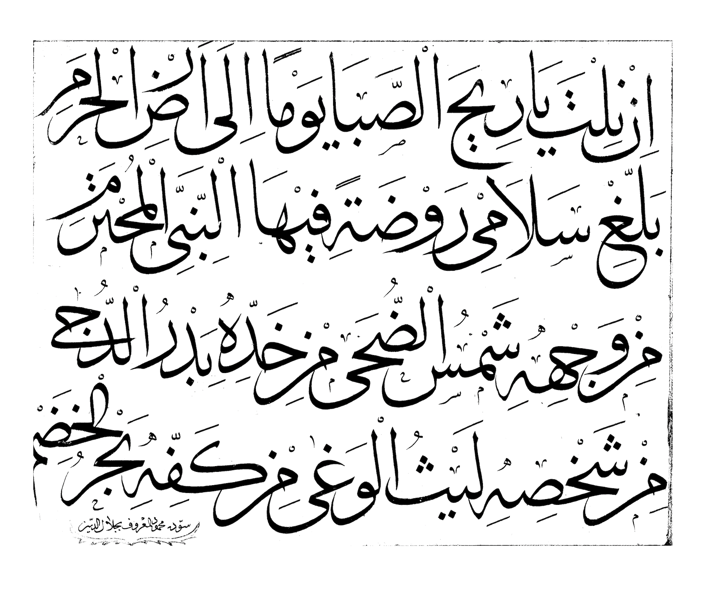

Script
Arabic

1st Century
The Arabic script is the third most widely used script in the world, after Latin and Chinese scripts. The script is read from right to left and has 28 different characters. The Arabic script is a cursive script. This means that letters of a word are joined together, both in handwriting and in print. Each letter can have up to four different forms. Which of the forms is used depends on the letters before and after it. There is no different form for uppercase letters and lowercase letters.
Persian

6th Century
There are 32 letters in the modern Persian alphabet and the script is read from left to right. Since the script is cursive, the appearance of a letter changes depending on its position: isolated, initial (joined on the left), medial (joined on both sides) and final (joined on the right) of a word.
Urdu
↓
Language
The Urdu Script is an extension of the Persian script, and the Persian script is an extension of the Arabic script. All three languages use the same Perso-Arabic script, but Persian and Urdu extended it to include some sounds found in their languages. Persian contains extra letters like گ, چ پ extra, and Urdu along with these, contains letters for retroflex consonants and nasal sound. There are also many differences in pronunciation, with many Arabic letters becoming homonyms in Urdu and Persian.
Script
Any language that uses any variant of Arabic script can use any calligraphic style. It is similar to a font: any language that uses Latin script can be written with any font choice as long as the letters, diacritical marks and conventions used by the particular language are followed. In practice, however, Urdu readers lean heavily toward favoring an Urdu style of the Nasta’liq script. This script is conventional in Persian for the writing of poetry. In Urdu it is used on signage, in newspapers, in books and in many other applications. By contrast, when writing or setting type for the Arabic language, Nasta’liq is a very rare choice.
Illuminated Manuscripts
Not only are the written languages modified, the artistic style is also extended onto one another. Persian calligraphers maintained the intricacy in their borders inspired by Islamic illuminated manuscripts that started with the Arabs and even went beyond it, adding their own flair to the designs. However, Urdu calligraphers simplified their borders focusing more on the Nasta’liq script. While Arab calligraphers chose dark and richer colours for their borders, Persian calligraphers opted out for slightly muted values, while Urdu calligraphers leaned towards neutrals or no colour at all. Urdu and Persian, unlike other languages using Arabic script variants, are written in the slanting Nasta’liq script while Arabic is written in Naksh script.
Calligraphic Instruments
Bamboo’s hard edge allows the calligrapher to perform the full spectrum of pen movements, but bamboo also has a suppleness and flexibility that is crucial for Arabic and Islamic calligraphy.The reed pen was the main writing instrument used by Islamic calligraphers. The nib of the reed pen is placed on a pen, rest and trimmed with a knife. The reed pen also known as a khamish pen is used by Arab, and Iranian calligraphers.The reed of the pen is grown along rivers. Although this pen has been used for over 500 years, preparing the pen is a lengthy process. Thin rose stems were used as calligraphy instruments because the narrow nib was great for fine writing while wider nibs were used for larger writing. Each letter has its own designated proportions so calligraphers would switch back and forth between different pens. The ink is often black and chosen so that its intensity can vary greatly, creating dynamism and movement in the letter forms.